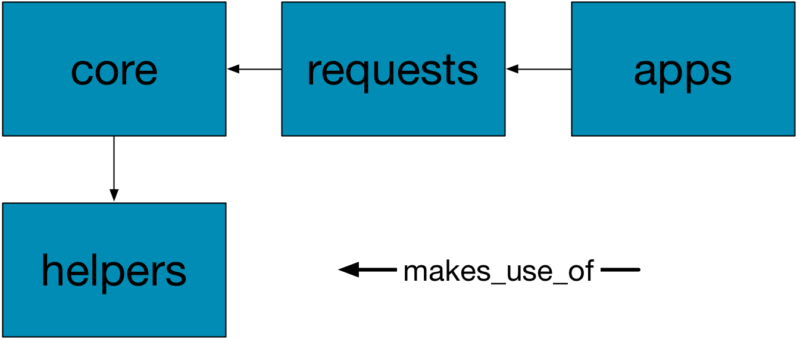
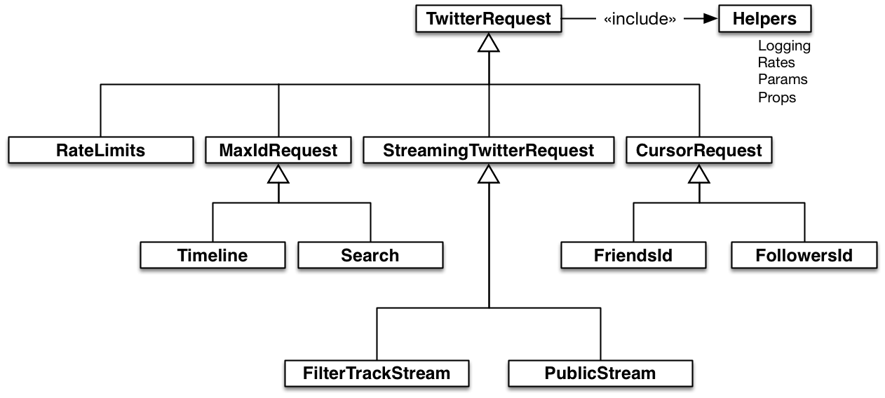

February 17, 2015


def url
raise NotImplementedError, "No URL Specified for the Request"
end
def include_param?(param)
return true
end
def display_params
result = []
escaped_params.keys.each do |key|
result << "#{key}=#{escaped_params[key]}" if include_param?(key)
end
result.join("&")
end
require 'logger'
module TwitterLog
class CustomFormatter < Logger::Formatter
def call(severity, time, progname, msg)
"#{time}: #{progname}: #{msg2str(msg)}\n"
end
end
def default_logger
logger = Logger.new($stdout)
logger.progname = request_name;
logger.formatter = CustomFormatter.new
logger
end
private :default_logger
end
@log = args[:log] || default_logger
log.info("REQUESTING: #{request.base_url}?#{display_params}")
def make_request
check_rates
request = Typhoeus::Request.new(url, options)
log.info("REQUESTING: #{request.base_url}?#{display_params}")
response = request.run
@rate_count = @rate_count - 1
response
end
def check_rates
refresh_rates if @@rates.size == 0
refresh_rates if Time.now > twitter_window
return if @rate_count > 0
delta = twitter_window - Time.now
log.info "Sleeping for #{delta} seconds"
sleep delta
refresh_rates
end
def collect
init_condition
while condition
response = make_request
if response.code == 200
success(response) do |tweets|
yield tweets
params[:max_id] = (tweets[-1]['id'] - 1) if tweets.size > 0
update_condition(tweets)
end
else
error(response)
end
end
end
def include_param?(param)
if param == :max_id
if params[param] == 0
return false
end
end
return true
end
class Timeline < MaxIdRequest
def initialize(args)
super args
params[:count] = 200
@count = 0
end
def request_name
"Timeline"
end
def twitter_endpoint
"/statuses/user_timeline"
end
def url
'https://api.twitter.com/1.1/statuses/user_timeline.json'
end
def success(response)
log.info("SUCCESS")
tweets = JSON.parse(response.body)
@count += tweets.size
log.info("#{tweets.size} tweet(s) received.")
log.info("#{@count} total tweet(s) received.")
yield tweets
end
def init_condition
@num_success = 0
end
def condition
@num_success < 16
end
def update_condition(tweets)
if tweets.size > 0
@num_success += 1
else
@num_success = 16
end
end
end
class Search < MaxIdRequest
def initialize(args)
super args
params[:count] = 100
@count = 0
end
def request_name
"Search"
end
def twitter_endpoint
"/search/tweets"
end
def url
'https://api.twitter.com/1.1/search/tweets.json'
end
def success(response)
log.info("SUCCESS")
tweets = JSON.parse(response.body)['statuses']
@count += tweets.size
log.info("#{tweets.size} tweet(s) received.")
log.info("#{@count} total tweet(s) received.")
yield tweets
end
def init_condition
@last_count = 1
end
def condition
@last_count > 0
end
def update_condition(tweets)
@last_count = tweets.size
end
end
class CursorRequest < TwitterRequest
def initialize(args)
super args
params[:cursor] = -1
end
def include_param?(param)
if param == :cursor
if params[param] == -1
return false
end
end
return true
end
def collect
while params[:cursor] != 0
response = make_request
if response.code == 200
success(response) do |tweets|
yield tweets
params[:cursor] = JSON.parse(response.body)['next_cursor']
end
else
error(response)
end
end
end
end
Ctrl-Cthe client.
message boundary
class StreamingTwitterRequest < TwitterRequest
def initialize(args)
super(args)
@buffer = ""
@continue = true
end
def request_shutdown
@continue = false
end
def process
index = @buffer.index("\r\n")
while index
yield @buffer[0..index-1]
@buffer = @buffer[index+2..@buffer.length]
index = @buffer.index("\r\n")
end
end
def collect
@request = Typhoeus::Request.new(url, options)
@request.on_headers do |response|
if response.code != 200
error(response)
end
end
@request.on_body do |data|
@buffer = @buffer + data
process do |msg|
begin
yield JSON.parse(msg)
rescue JSON::ParserError
# ignore empty message
end
end
Thread.current.exit unless @continue
end
@request.on_complete do |response|
request_shutdown
end
@request.run
end
end
An introduction to NoSQL!